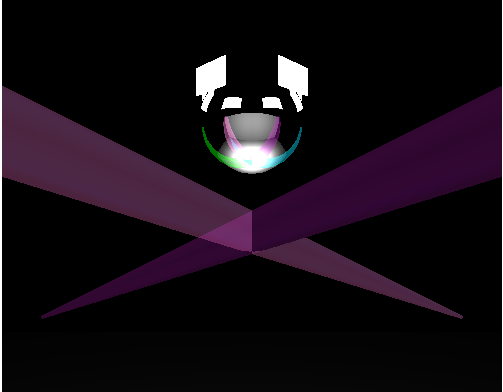
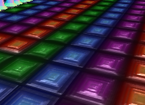

Caroline and Sheree's Totally Rad Disco
Press 'q' to pausePress 'p' to playPress 'r' to rewindPress 's' to stopPress 'g' to spin the disco ballPress 'h' to stop the disco ballPress '1' to make the robots dancePress '0' to make the robots stop dancing
OUR SCENE:
hello everyone, this is our final version of our project. It currently contains a rotating disco ball, two TVs that display Abba's "Dancing Queen" music video (and play sound as well), walls on which disco lights are playing, and thirteen robots that dance.
THE DISCO BALL AND THE DISCO LIGHTS AND STROBES:
The code for the disco ball was borrowed from our tutor, Susie Carovillano, who submitted it as her constribution to the CS307 library. We appreciate her help very much! We added our own animation code to the disco ball so that it rotates. Press 'g' to start the rotation and 'h' to stop the rotation. Additionally, you'll notice that pressing 'g' multiple times will speed up the ball's rotation speed. Press 'h' an equal number of times to slow down and subsequently stop the ball from rotating.The disco lights are actually video files that have been displayed on planes and placed on the four walls, the left and right walls, the ceiling, and the back wall. The videos can be paused and rewinded. The strobes are simply translucent cylinders that are angled from the bottom four corners. We animated them so that they would be removed and re-added every few seconds, kind of like how strobe lights turn on and off at discos.

THE TVs AND THE AUDIO:
The TVs are on planes and they display Abba's "Dancing Queen" music video, which is a file we have uploaded into our alpha folder. The videos play the audio that you hear when you load the scene. We love Abba and their creative and dynamic tunes. We think that "Dancing Queen" fits the attitude of our disco scene QUITE well. You can also pause and rewind the videos, using code we borrowed from a user (stemkoski) on github, which essentially creates a keyboard object or variable that is referenced when we call our update() function with every frame. Depending on which key the user presses, the TVs will either pause, rewind, or play. stemkoski's code is linked in our source code but can also be found here. The directions on how to pause, rewind, and play the TVs is located at the top of this page.
THE ROBOTS:
We got our inspiration for the robots from the clown from the second homework assignment. We created the robot's face with a mixture of textures and three dimensional geometries. We also added bolts and rods to the body and head to make the robots look more authentic. The robots have a golden body and face and rainbow flairs for a groovy touch. The flairs were constructed from lathe and spline geometries. The robots also have glittery black shoes which we hope emulate the shoes of disco dancers from the past. These shoes are made from a texture mapped material. They dance in a circular fashion.
THE FLOOR:
The floor is a bump mapped textured surface. The bump mapping makes the floor look much more three-dimensional and realistic. We have also turned up the shininess of the floor texture to give it a nice metallic quality. We might change this in the future though. Bump Mapping: Bump mapping the material makes the material look more realistic. The bump mapping contrasts the dark parts and bright parts of the by creating depth in the dark parts.

PROBLEMS WE ENCOUNTERED (AND ATTEMPTED TO RESOLVE):
The main problem we faced was allowing the robots to dance. Our initial idea was to have the arms move in the pattern of a wave. However, after numerous attempts to access and move the arm objects, we theorized that when the arms are added to robot object, the arms are no longer their own object and become part of the robot object. This prohibited us from moving the arms. We could have made a different function that added the arms outside of the createRobot function, but we did not have enough time to try and match up the arms with the robots. We instead have the robots dancing in a circle.